汶川地震背后的元凶：地球物理武器HAARP
(2018-05-17 22:54:05)
十年前的2008年14时28分，四川汶川发生8.0级地震，69227人遇难，374643人受伤，17923人失踪。
冰冷数字背后，是无数支离破碎的家庭，去过地震遗址的人都无法忘记那孤零零伫立在崩塌山体上的旗杆和篮球架，忘不了那些埋在滑坡泥石下的生命，忘不了失去孩子的母亲悬挂在中学旧址的横幅，忘不了支离破碎的宿舍楼和教学楼。不忘曾经的伤痛，不忘遇难的同胞，我们会更加珍惜眼下的生活和身边的亲人......

岁月匆匆，离汶川大地震已经过去10年了，10年前，一场地动山摇的灾难，让一个又一个家庭支离破碎，让一个又一个生命悄然而逝，从2008年到2018年
整整10年过去了，但我们不会忘记，那些无辜受难的同胞，那些坚持救援的战士，还有那些为了让孩子、学生、朋友、家人更好地活下去而牺牲的生命。。。。。。
地震自古就有，各种天灾自古就有。中华民族五千多年的岁月，经历过的灾难难道还少了？不是照样兴旺发达、繁衍至今吗？不是至今仍然占人类六分之一吗？老祖宗大禹的时代，就被洪水累得更呛，可是，华夏并未因此灭亡啊，反而增加了一种自强不息、战天斗地的精神。天灾不可怕，怕的是“人祸”。
有相关证据表明，2008年5月12日14时28分发生的汶川地震是美国动用地球物理武器——HAARP（高频主动极光研究项目）定向攻击汶川地区引起当地地壳同频共振从而引发地震的结果。
一.1995年出版光明会卡牌中的气象武器与地震工程
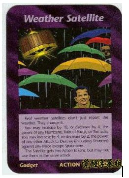
气象卫星 Weather Satellite---气象武器
[纸牌说明]：（强调“现实中”real）现实中的气象卫星，不仅仅报道天气，而且改变(操纵)天气。 你可以增加10级或减少4级、对于任何飓风、暴雪、龙卷风的威力。你可以增加4级或减少2级、对于任何（含灾难）针对除太空之外任何地方的毁灭性攻击的威力。这个卫星获得两个行动代币，但不能在同一攻击中同时使用。牌面左下角文字“Gadget小装置”大概是暗指HAARP装置。这是一张行动牌。
[实际涵义]：可以通过气象武器制造自然灾害来达到减少人口的目标。气象卫星除了预报天气，还能操纵天气，制造雨雪、飓风、地震、海啸。
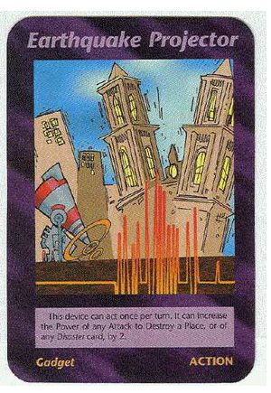
资源卡：地震工程。向地壳发射高能电磁波（高频主动极光项目HAARP），从而引发地震。
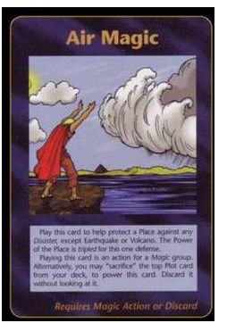
空气魔法。光明会正在幕后操纵天气，通过HAARP制造气候乱象
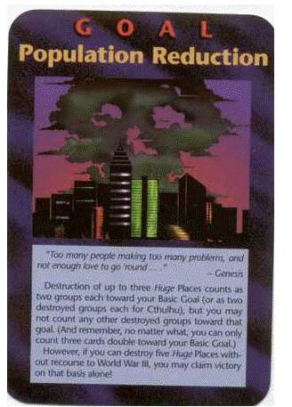
人口减少计划.
目标：降低人口。这是游戏胜利目标之一，前面制造的一切灾难最终为达到这个目的。值得注意的是，图正中为纽约帝国大厦成为了最高建筑，背后世贸大厦的双子塔楼却没有踪影，取而代之是一个骷髅状的蘑菇云。这个景象在游戏发行6年后才会出现——911事件。
此卡可在告诉我们，9 / 11恐怖袭击对世界贸易中心双子塔是在开幕式的打击活动，极大地减少全球人口。也可以说是NWO的序幕.纸牌说明：如果你想保留世界人口5亿，就要通过发动第三次世界大战WWW3来达成
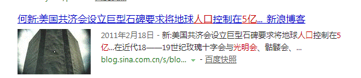

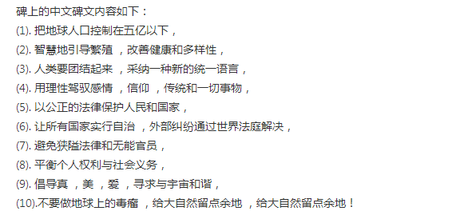
（注意，该石碑没有日语和韩语，自己想为什么）
二.地球工程项目之地球物理武器HAARP项目（高频主动极光研究项目）
HAARP及其相关技术的人工影响天气不是新事物，全球统治精英为事件（极移）使用占星预测也不是新事物。这两种现象在过去几年里都得到了广泛讨论和证实。将人工影响天气和占星结合起来，结果便是发生在德州休斯顿和附近的哈维飓风。这是一起人工影响天气的伪旗（虚假袭击事件）被根据占星术仪式性的在这个时候发生。我们必须有勇气来寻找事件的真相，必须处于赋权的位置，同时将爱和光明发送到被这个事件影响的所有人。量子物理学告诉我们，我们作为个体和集体有多么强大，让我们将有力的，充满爱的治愈能量发送给被这个事件影响的所有人。
———兰斯．斯科特勒Ｌance Schuttler 美国调查记者和作家
地球的磁场是一种我们人类作为主体受到影响的主要介质。以不寻常脉动为特征的极低频（ELF）能量的人工模式，现在可以从理论上被认为是源自于高频主动极光研究项目（HAARP）设备或技术。大量能量被HAARP设备定向至地球的磁场中。这个能量沿着地球的磁场被定向到你。这里的问题和控制地球毫无两样。使用显示力量的方法控制地球：控制环境，影响你的生活的健康。我们的天气已经被彻底改变了。这支持了一种说法，即大气的基本电性质已被气溶胶改变，而且这种做法仍在继续。
—————克利福德.卡尼科姆 Clifford Carnicom 美国调查科学家和活动家
地球工程（geotechnology）也叫气候工程，这一概念由英国皇家学会2009年首先提出。它是指人类对地球气候系统进行大规模人为干涉，在全球规模对地球的气候环境进行操控。
1.HAARP简介

HAARP，全称High Frequency Active Auroral Research Program，高频主动极光射线研究计划。该计划由美国海军和空军负责，于1993年启动，2002年建成，2003年进行首次试验，2004年降低保密级别，部分信息得以公开，不过其所在的Gakona地区仍然严禁无关人员接近。HAARP的主体是由180座高频电磁波发射器组成的矩阵，矩阵面积为23.5公顷，另有360台发电机组以及其它配套设施。根据国际法规，电磁波发射器的功率不得高于5万瓦，但早在首次试验时，HAARP的功率就达到了360万瓦，后来逐步提升到100亿瓦、360亿瓦、1000亿瓦、1000兆瓦，在不久的未来还将进行功率为1700兆瓦的试验。提起HAARP的基本工作原理，其实不难理解。众所周知，大气层由对流层、平流层、电离层组成，HAARP莫过于一个以高频电磁波为载体，向电离层大气投射强大能量的工具。虽然美国政府一再声称HAARP与军事用途无关，但它所执行的任务却无一例外地关乎两个字：杀人。美国媒体也给予它新的名字：地球物理武器。
HAARP 项目是世界上最大的电离层改造工程，也是世界上最大气象战武器，可以人为操控当地天气，破坏其他国家飞船和运载火箭的飞行，扰乱其他国家的通讯往来

大气地球物理学武器主要分为三种：气象武器（雨、飓风及干旱，海啸）、臭氧武器（通过太阳紫外线辐射直接杀伤有机体）及气候武器（降低军事敌对方或地缘政治敌对方的农业产量）
2004年之前，HAARP处于高度保密的状态下，那时，参与HAARP的美国海军人员都要佩戴这个另类的臂章，臂章上没有任何图案，只有两行英文：IF I TELL YOU，I HAVE TO KILL YOU，其寓意不言自明。

建造HAARP期间，美国空军第22运输队负责把设备从加利福尼亚州的工厂运送到阿拉斯加州某地，队员们全部佩戴这个臂章，月亮和漆黑的底色代表它只在夜间执行任务，问号和英文DON'T ASK意味着高保密级别，NOYFB的含义已经记不清了，只记得F是FUCKING的缩写。

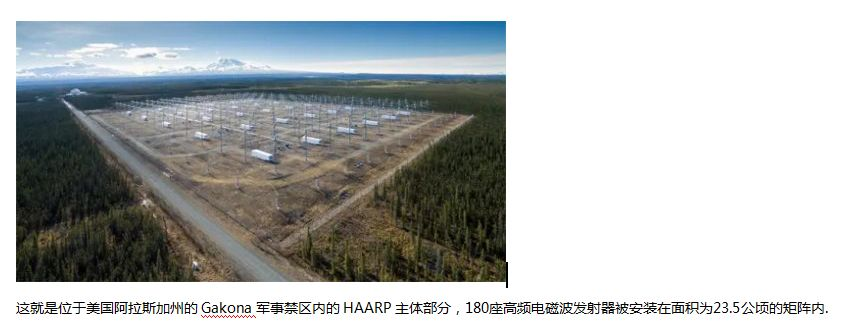
在地面上观看HAARP的高频电磁波发射器矩阵就会产生这种视觉效果，这些东西工作时的声音多少有些灵异。
HAARP的耗电量十分惊人，需要360套发电机组开足马力才能保证电力供应。
阿拉斯加州南部是亚洲与北美洲之间的洲际航班的必经之地，为了避免HAARP对附近空域的客机造成伤害，在HAARP周边有许多这样的装置，它们全天向空中发射告警信号。
HAARP发射的高频电磁波会推动电离层大气内的电流沿水平方向移动，从而产生电喷流，即极光（人造,这是人造地震的重要标志），因此，每当HAARP执行任务，天空中总是五彩斑斓，多少人意识到，在这份五彩斑斓之下掩藏着杀气腾腾。
在GOOGLE上搜索HAARP，从上到下依次为：HAARP 阴谋、HAARP 计划、HAARP 海地、HAARP 维基百科、HAARP 天气控制、HAARP 地震、HAARP 武器、HAARP 阴谋论、HAARP 大脑控制、HAARP 智利。

2008年HAARP发射功率已由3.6兆瓦增至10兆瓦，相当于世界最大商用电台的20万倍。从军事角度看，HAARP就是一种大规模杀伤性武器，可以破坏全球农业和生态系统。该基地引起许多国家的猜疑和恐慌。
目前，美国计划或已经在格陵兰岛建设另一座类似HAARP系统的设施，其输出功率是HAARP系统的3倍。而阿拉斯加和格陵兰正好就是目前美国战略预警系统中的两个超大型预警雷达的所在地。也就是说，这两个位置正好是设置导弹防御墙的最佳位置。一旦这两个系统正式运转，或再增加一个系统，则美国的北部战略导弹防御阵地将建设就绪。到那时，世界的战略平衡将荡然无存。
1）制造强辐射、干旱或洪水：
HAARP可以将180束高频电磁波集合在一起，以1000兆瓦的功率不间断地辐射电离层上的某个点，直至在该点周围产生高温，其加热原理与微波炉相同。高温会把臭氧燃烧殆尽，造成臭氧空洞，失去了臭氧的阻拦，宇宙空间的各种高能射线就会射入地球，带来比核爆炸辐射强大得多的能量，造成巨大伤害，甚至杀死某地区的全部生物。另外，如果HAARP减小向电离层聚集的能量，只是适当地加热电离层大气，就可以产生另一种结果，即通过改变电离层结构引起平流层和对流层发生相应变化，从而改变大气环流，以达到在指定区域内制造洪水或干旱的目地，因此，HAARP也被用于气象战。五角大楼公开声称美军将在2015年初步获得控制全球气侯的能力，HAARP必然是其中重要一环。
人工降雨：上世纪60年代，美国在佛罗里达州建立了“麦金莱气候实验室”，专门开发气象武器。1966年，该实验室开发的武器开始用于越战，美军共出动飞机2.6万架次，在越南上空投放了474万枚降雨催化弹，向云层里倾泻了成吨的碘化银，实施大规模人工降雨，造成越南部分地区洪水泛滥，冲毁了大量桥梁、水坝、道路和村庄。最重要的是，洪水使越军补给线———“胡志明小道”变得泥泞不堪，严重影响了越军的作战行动。
人工飓风：上世纪70年代，美国除了在古巴制造干旱外，还在1974年用人工方法将飓风引向洪都拉斯，企图趁该国陷入混乱之际，扶持亲美政权上台。1974年9月，“法夫飓风”的气旋突然转向洪都拉斯。暴雨和时速超过177公里的飓风横扫大地，造成1.1万洪都拉斯人丧生，60万人无家可归。在一个名叫乔洛马的城镇里，由于堤坝决口，全镇6000人被淹死了一半。洪都拉斯的支柱产业———香蕉种植园几乎完全被摧毁。成千上万的灾民被困在树上、房顶上和堤坝上。公路、铁路和港口遭到了彻底的毁坏。这次飓风造成中美洲各国经济损失数千万美元，数万人伤亡，美国人则顺利达到了目的。后来，美国在大西洋上又成功地进行过3次人工引导飓风实验，其人造飓风技术日臻完善。。
人工制“旱”，美国科学家发现，在某地人工增雨将会造成周围地区雨量的减少，美军利用这个发现研制出了“干旱武器”。美国中央情报局利用这种武器在古巴的“上游”云层进行播撒碘化银作业，使古巴周边国家洪水泛滥，致使古巴出现反常的干旱天气。
气象地理战武器虽然隐蔽，但并非完全遁形，我们可以通过间接因素进行推测。尤其是其发动攻击之时间、地点的特殊性，能明显暴露出其极强的目的性，这种极强的主观目的性正是人工气象地理战与自然灾害最大的差别所在。
美国近二十多年来进行的气象地理战试验，其气象地理战技术和武器系统日臻完善，而中国近二十多年来连年巨灾，时间上为何如此巧合？为什么中国几千年来从未如此频繁地连年出现多种多样的巨大气象地质灾害？为何这种巨大气象地质灾害之间，缺乏有说服力的因果和关连关系？我们面对公共解读的气象地质灾害的原因，多归纳为环境破坏、自然灾害、全球变暖、气候异常，但从中国历史上的气象地质资料和灾区所处纬度、地理位置来看，许多灾害真的难以解释。
我们不能总是想着如何解释这些灾害发生的“自然”原因，而应该换一种角度查找这种怪异气象地质灾难的根源。科学家所掌握的知识与技术不只是用来解难答疑的，更要用以保护生命、生产和国防安全。
以近些年来西南地区连续发生的大旱为例，西南地区历史上是中国的丰水区，也是中国重要的农业生产和军事战略要地，特别是在抗战时期，西南地区曾是中国的生命线，西南地区的建设与发展对中国生产和国防安全致关重要。美国就是瞄准这一点，多次对中国西南发动气象地理战，使中国西南地区在近些年连年爆发严重的干旱，使当地生产发展和国防战备建设蒙受重大损失。
2010年春季，本是鲜花早开的西南五省市，包括云南、贵州、四川、重庆、广西出现有气象资料以來的首次最严重大旱。大河断流，水库干涸，农田龟裂，赤地千里。受灾面积达一亿一千余万亩，受灾人口逾六千万，估计直接经济损失至少三百五十亿，干旱严重的程度史上罕见。据中国扶贫基金会报告披露，仅2010年西南地区因气象灾害导致西南五省区市除四川之外，至少有218万人返贫，经济损失超350亿元。以云南为例，2010年秋冬季节的干旱，导致云南小春作物大面积绝收，除了两百多万人因旱返贫外，西南地区还有一千六百多万人的贫困程度加深。旱灾发生后，各方面都在找原因，但至今没有定论。
西南从来都是雨量丰沛之地，每年来自西太平洋和印度洋的湿润气流都早早给西南地区带来丰沛的降水。况且对比与中国西南地区接壤的越南、缅甸和中国藏南及印度北部等地雨量充沛，从卫星图上可见，中国一边旱得一片枯黄，而另一边却植物茂密、郁郁葱葱。这是为什么？从巨灾的极度异常、在一个国家的发生频度、国外地球物理等高科技和气象武器的发展、国际政治以及中国的国际环境等诸方面分析，我们也决不能排除气象战这一极有可能的人为原因。
西南地区近些年的异常天气还有一个极为异常的特点，就是严重的干旱之后紧接着就是严重的洪涝，干旱与洪涝天气的交替似乎连中间的过渡都不存在。这种交替发生的两种截然相反的灾害气象，不得不让人怀疑其中的人为操控因素——美国的气象地理战在作祟。
中国西南输水、气流的上游是东印度洋、孟加拉湾海域及周边地区，这些地区正是适合基地式或船舰移动式电磁武器发起攻击的位置。而美军在新加坡和印度洋拥有军事基地，美军的舰船经常在附近活动，特别是在印度洋的迪戈加西亚岛美军基地有专门针对中国的电子战系统。另外，2008年春运期间，几乎切断我国南北交通的暴雪冻雨，显示在卫星云图上的一股可疑的窄带冲击气流，就发自孟加拉湾
2003年10月，美国国防部出资10 万美元，委托美国全球商业网络咨询公司完成了一份题为《气候突变的情景及其对美国的国家安全的意义》的秘密报告，其中预测“中国南部地区2010年前后将发生持续整整十年的特大干旱”，随后中国历来雨量丰沛的西南各省在春夏时节接连发生严重的干旱。这是巧合？是预测？还是预谋？
以美国的气象战技术，通过在靠近中国的国际水域或赤道播撒化学药剂，从而干扰气旋和气流，制造异常气流影响中国的气象变化，是完全有能力做到的。
早在20世纪50年代艾森豪威尔曾明确指出：“气象控制比原子弹还重要。”而近些年来，一些军事强国尤其是美国悄然发展气象武器，并且势头有增无减。
曝光的美国军方文件《天气战斗力的倍增器：2025年拥有天气武器》中，明确将气象分析与技术列为重点发展的武器技术之一。控制天气一直是五角大楼的既定目标。
目前美国已经具备的气象武器主要包括：温压炸弹、制寒武器、高温武器、热压气雾武器、云雾炮弹 、人工消云、消雾武器、人工控制雷电、太阳武器、化学雨、海啸风暴、巨浪等。前不久，美军试验了“闪电武器”，可以将闪电引导那些被攻击的目标，如指挥所、弹药库等，这本身就是气象武器的重要应用。
据英国《焦点》月刊报道，20世纪80年代以来，美军收集、整编了全世界上千个机场的气象资料，并定期修正。美军先后投资进行过数十个秘密的气象研究项目，其中包括制造地震的“阿耳戈斯计划”、制造雷电的“天火计划”和在飓风周围实施人工降雨以改变风暴方向的“暴风雨计划”等。
2）制造地震：
HAARP能够向电离层的某个特定区域发射高频电磁波，如果控制得当，高频电磁波就会被电离层大气反射到地面的相应区域内，其原理与广泛应用于军事上的电离层反射通讯技术相同。但是，二者的不同之处在于，HAARP所发射的电磁波具有的能量是普通电磁波的200亿至100兆倍，地球本身是一个巨大能量聚集体，蕴藏在地壳中的热能分布也并不均匀，从而造成稳定性很差。一旦这些电磁波射入大地，并且其频率与大地本身的振动频率相同，就会引起共振，从而诱发令人难以想象的地震，这种地震被称为特斯拉效应（Tesla Effect）人控地震。
但地震武器由于完全不可控，在被军事利用的同时，也会对其它平民或设施带来巨大损害。
1961年，在进行试验的过程中，有35万枚长度为1-2厘米的铜针于被抛撒到电离层，阿拉斯加发生了里氏8.5级地震，与此同时，在智利一大部分沿海地带沉入了海中。
上世纪80年代末，美国在阿拉斯加北部建造了360个高度为24米的天线塔，在这些装置的帮助下，美国军方将把不同频率的大功率能量束射向电离层，还计划建立HARRP系统地区中心网络。
所有这一切都使制造用于军事目的的等离子粒团（高电离气体的局部区域）成为可能。借助于相干激光束移动天线的焦点，能够控制与球形闪电相似的等离子团。
印尼海啸、汶川地震之前半小时左右，当地都出现了五彩斑斓的极光，一些视频网站对此均有记录，虽然这些极光远不能与北极地区的大面积极光相提并论，但这不得不引起怀疑，如非人为因素，在非极地地区怎么可能出现极光？
如是人为因素，又是谁在电离层大气上制造活动？突然想起美军的超级武器——HAARP。
在没有确凿证据的情况下，既不能肯定，也不能否定海啸、地震等灾害与HAARP有关，但HAARP拥有这方面的能力理应毫无疑问
3）屏蔽无线电通讯、摧毁飞行器：
HAARP有能力通过震荡并加热的方式把离子束沿磁力线方向射向电离层，随着电离层中离子的密度不断变大，最终将形成等离子体。等离子体的特性是拥有其自身的震荡频率，这个特性使电磁波不能在等离子体形成的介质内传播，因此，在电离层内制造等离子体就相当于制造了一道天然屏障，屏蔽敌方无线通讯设备和雷达的信号。目前，某个HAARP的高级项目还在研究利用相同原理在高空或大气层外制造高电离云，高电离云可以在敌方飞机、导弹、卫星的周围产生旋转力矩，受攻击的目标轻则偏离飞行轨道，重则在巨大的超重压差下解体。
4）军事侦查：
早在高中物理课中就讲过，低频电磁波即所谓的长波或超长波能够透过障碍物传播。把这个特性应用在军事上，就可以用低频电磁波探测隐藏在障碍物下的物体，例如山洞中的导弹、深海中的潜艇。然而，在地面上几乎无法发射低频电磁波，因为发射天线的长度必须与电磁波的波长相匹配，如果发射30赫兹的电磁波，就需要1000公里长的发射天线，这显然不切实际。HAARP可以先将作为载波的高频电磁波发射到电离层中，引起电离层中的电喷流产生谐振，这样，HAARP就把电喷流变成虚拟天线，然后借助虚拟天线辐射出低频电磁波。
5）干扰人脑思维：
一旦HAARP具有借助虚拟天线发射低频电磁波的能力，就意味着HAARP可以干扰人脑思维，譬如让某一区域内的正常人瞬间丧失方向判断能力、语言表达能力抑或身体平衡能力。其原理在于人脑电磁波也属于低频电磁波，也会被外界的同类型电磁波所改变。但是，对于美军来说，仍然有问题等待解决，因为干扰人脑思维的前提是充分掌握人脑电磁波的特性，例如了解何种人脑电磁波决定着人脑的方向判断能力，据信美军早已展开相关方面研究。曾经参与HAARP的斯坦福大学研究小组声称美军在2004年的伊拉克战争中使用了HAARP，导致大批伊军士兵出现烦躁、焦虑，也就是说HAARP初步完成了干扰人脑思维的试验。
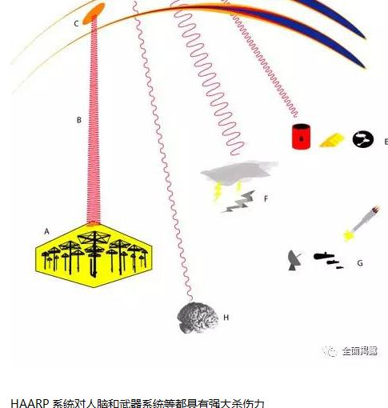
HAARP系统射向电离层的电磁频谱反射回地球后，可以穿透地面，而在此波束辐射范围内的人或动物的大脑将被破坏，而这一点也被相关人士指称是美国军方进行此项研究的目的之一。低频电磁波可以和人的大脑工作频率（0.5～40赫）一致，从而进行意识的控制。人的大脑波可分为四组： 13～35赫控制人的正常活动， 8～12赫控制人的学习和注意力， 4～7赫控制人的想像力， 0.5～3赫控制人的睡眠。来自极光电喷流的这些高强度的甚低频电磁波进入大脑后，起到控制意识、破坏思维的目的，更有甚者，强大的60赫的频率可以破坏DNA。利用这些低频电磁武器作战，可以很快造成对方有生力量的瘫痪，不战而胜。
HAARP系统的建造者也承认，该系统能够对地球大气层和电离层产生热效应和电磁效应，从而达到控制天气或者引发毁灭性自然灾变的目的。此外，它还能够对人的大脑和神经系统产生作用，从而改变人的心理和行为。
目标明确的心理物理学作用可以使人反应减缓，引发不自信、恐惧、仇恨，使人丧失自卫本能，无法控制自己的行为，无法对复杂的情况进行评估和分析，不能够判定时间和方位等等。这些效应都可以在局部和大规模行动中使用。
6）人类面临巨大危险
对于美国秘密研制地球武器，世界许多国家都予以揭露。除了英、德国以外，俄罗斯国家杜马国防委员会和国际事务委员会早在2002年便揭露说，美国试图人为制造地震、海啸、山崩等自然灾害，利用高频无线电波对地球近地环境进行大规模试验。俄罗斯媒体指出，美军对近地环境进行大规模试验，其目的是要制造出威力巨大的“地球物理武器”集成系统。与以前的“地球物理武器”相比，美国现在要研制的“地球物理武器”集成系统在威力和破坏性上完全不可同日而语。
显然，美国的“地球物理武器”试验将对人类产生巨大的威胁。众所周知，随着工业的发展，近年来，地球接连出现气候变暖、暴雨、地震、海啸、山崩等生态灾难，这是自然对人类破坏地球环境的惩罚。现在美国又在加强对地球物理武器的研制，其对环境人为的消极影响，已导致自然恢复能力的实际丧失，这将进一步对人类生存的环境造成无可挽回的影响。针对美国近期的研制活动，俄罗斯科学家不无忧虑地指出，在对近地环境进行大规模试验的过程中，地球的大气层、离子层和电磁层受到高频无线电波有针对性的强大影响，致使近地环境平衡状况遭到破坏、离子层被加热并人为地制造出等离子体。将对地球物理、地质和生物造成全球规模的破坏性巨变，其中有些巨变是不可逆转的。
2. HAARP，天气战争和ELF思想控制
所有这些控制手段都是被设计用来从外在压制或从内在压制，目的是阻止我们连接到真相的振动。表面上看，似乎他们在努力抓取更多的控制，事实上是，他们在近乎绝望的拼命抓住他们过去已有的控制力，实际上他们在尽力阻止整个控制系统的崩溃和瓦解。他们用各种措施，其中包括人为制造地震和极端异常气候。这项技术名字叫HAARP，在美国阿拉斯加州，现在已经在全世界建立起越来越多的与此有关的组织和设施，它把电离层的无线电波反弹到地球表面
HAARP最主要的作用是，从地球表面支持月球矩阵，在大气中产生一种低振动的环境，强化我们生活在一个更低频的环境中。再次的，它的作用目标是针对“地球能量场”要把“地球能量场”保持在低振动的状态，这正是为了对抗真相的振动-
--------------英国记者 阴谋论专家 大卫.艾克
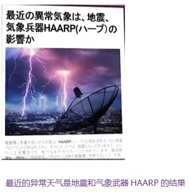
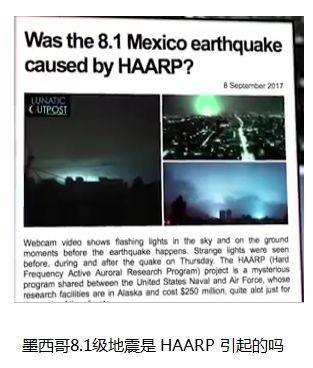


（在低纬度地区产生非自然极光，是HAARP运作制造地震的重要特征。这个特征在汶川，在玉树，在墨西哥都有出现，这也是判断是否是HAARP袭击引发地震的重要证据之一）
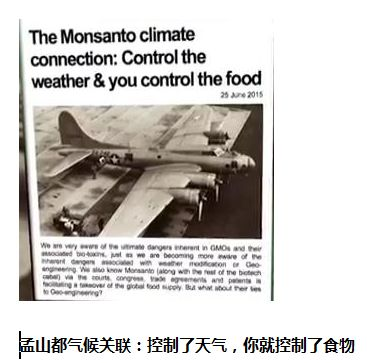


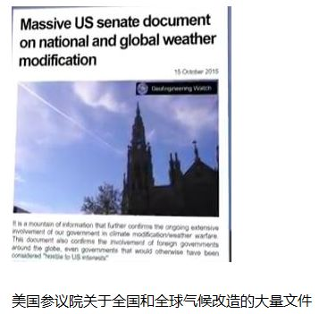
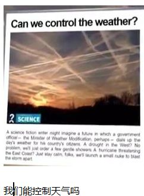


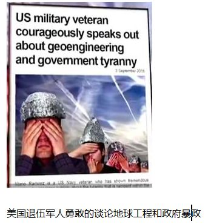
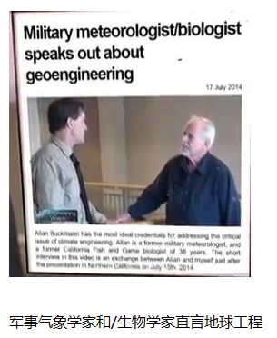

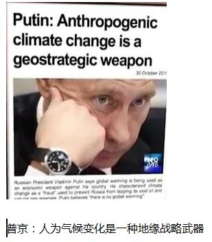

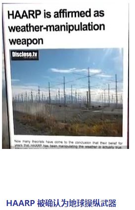


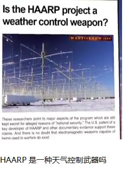


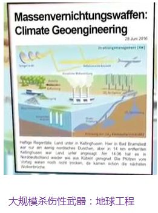
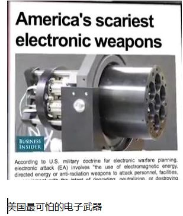
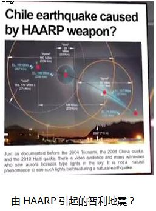
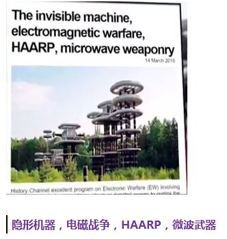


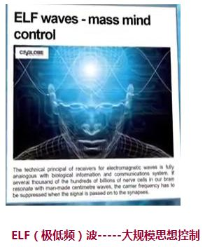
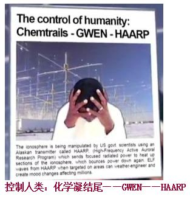
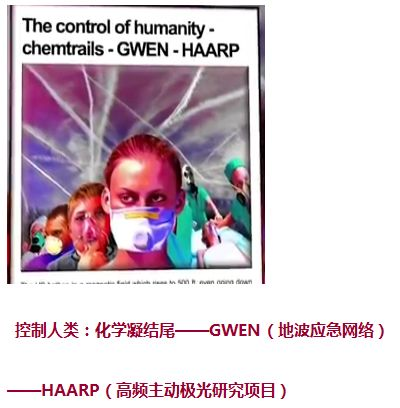
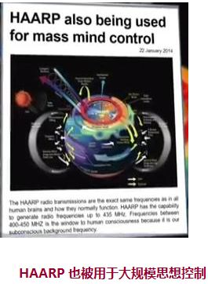
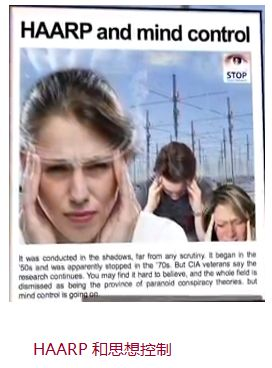
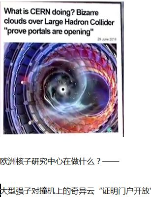


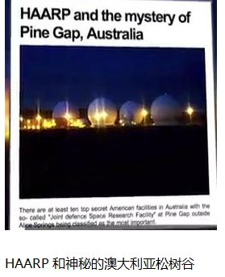


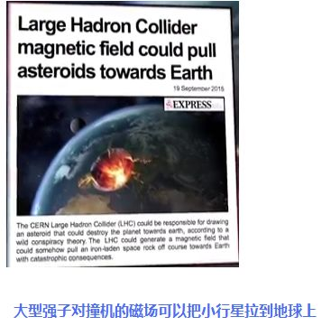

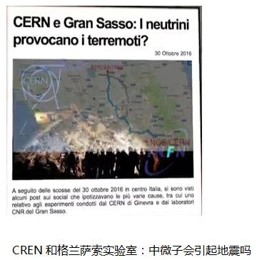

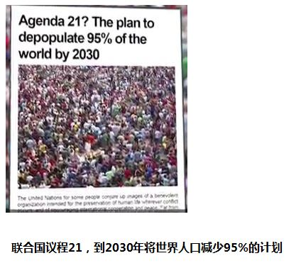

三.HAARP制造的地震;2008年汶川地震，2011年日本311地震，2017年墨西哥地震(肯定不止这三个，此处仅以此举证)
人工影响天气是一种卓越的先发制人的武器。它可被用来对付敌国甚至”友好的国家“，而对方却完全不知情。”天气战争是一种隐蔽的先发制人的战争形式“。五角大楼制定了全球军事议程的轮廓，这是一场无边界的漫长之战。人工影响天气可被用来”破坏敌人的经济，生态系统和农业“。美国空军有操纵气候的能力，既可用于测试，也可直接用于军事——情报。这些能力”延伸到引发洪水，飓风，干旱和地震“，它可造成金融和商品市场的混乱，并有可能被用作内幕交易的工具来牟取经济利益。它能破坏一个国家的机构，同时，农业遭受破坏导致对粮食援助产生了更大的依赖性
—迈克尔.乔夫多夫斯基（Michel Chossudovsky）加拿大经济学家，活动家和记者
1.HAARP制造的2017年9月19日墨西哥7.1级地震
1）地震时间的诡秘巧合
相隔32年，在同一天发生强烈地震的几率微乎其微。如此刻意的巧合，人为的可能性更大。光明会痴迷数字命理学，在同一天制造大型地震，制造“巧合”，是他们常见的伎俩。
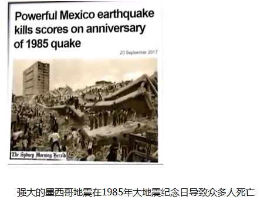

2）HAARP制造墨西哥地震留下的证据---神秘亮光（人造极光）
HAARP发射的高频电磁波会推动电离层大气内的电流沿水平方向移动，从而产生电喷流，即极光，因此，每当HAARP执行任务，天空中总是五彩斑斓，多少人意识到，在这份五彩斑斓之下掩藏着杀气腾腾。
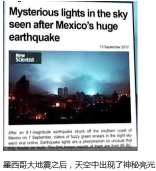
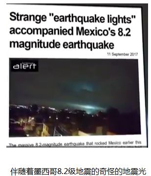
2.HAARP制造的2011年3月11日日本8.9级地震
.光明会卡牌（1995年出版）未卜先知连锁灾难=311地震+海啸+核泄漏


这张卡牌叫“联合灾难“”——2011年日本的311地震+海啸+核泄漏=连锁灾难。
这张卡的标题很有意思，叫做联合灾难，与日本的地震—海啸—核泄漏三位一体的连锁灾难不谋而合。
卡牌上钟楼大钟所指时间为2点55分，时针指向3，分钟指向11——日本时间3月11日下午2时45分发生9级地震。
卡片的功能是：你可以将两种灾难结合在一起使它们发生在一个地方，如果它们能够相配合的话。使用两张灾难卡，选取一个作为主要灾难，用另一个加强其威力。
卡牌上倒塌的钟楼形态与东京商业中心银座的标志性建筑和光百货的钟楼（和光百货是东京市中心仅存的百年建筑，历经1923年日本关东大地震和二战轰炸，钟楼曾在关东大地震中损毁。）一致——明确指向日本。而卡牌的右边，那个穿红色、蓝色衣服的人穿的正是日本和服。

这张卡牌叫核事故。2011年3月11日，日本福岛第一核电站1号反应堆所在建筑物爆炸后，日本政府13日承认，在大地震中受损的福岛第一核电站2号机组发生'事故'，高温核燃料正在发生'泄漏事故'

当这张卡片使用时，核电力公司将无法采取行动。
一些题外话，日本福岛的核泄漏是自然灾害掩护下的人为事故，到现在已演化成向太平洋无限倾注核废料的局面。如果这是阴谋论中减少人口计划的一部分的话，显然日本人也在被抹杀之列。 【这是白种人（盎格鲁-高加索、北欧金发碧眼纯种白人，认为他们是神的后代）针对黄种人的战争】

早期预警。像是云图，但也很像被震坏了的日本。九州四国本州北海道一应俱全，雷达中心的位置则是日本东北海域。效果是灾难发生后，给灾区+10防御。如果这是对311的预警将会更加有趣。
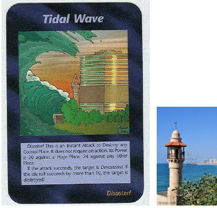
同是灾难卡的海啸。图中的建筑风格明确，中间的尖塔与清真寺标志性的塔楼建筑相符，辅以旁边的现代建筑，应该确有所指。但这个地标还未被辨认出，也许与04年发生在伊斯兰大国印尼的大海啸有关。
3.HAARP制造的2008年5月12日中国汶川8.0级地震
“自2007年美国发动世界金融危机以来，由于中国政府人为造成一枝独秀的假繁荣现象，自动掉进了美国设下的陷阱里，结果造成美国军方对中国遏制的急切心态。为了不使中国在美国经济萧条时一枝独秀，赶超美国，美国自非典、禽流感后又开始对中国频频使用气象武器，致使中国2008年汶川大地震，2009年南方寒潮，2010年初西南旱灾，2010年洪水泛滥。同时，参照缅甸2008年海啸地震，巴基斯坦2010年的特大洪灾（据说是美国驻阿富汗部队对喜马拉雅山进行核热照射，以致不光中国、巴基斯坦，甚至连其盟友印度也发生洪灾），再加上俄国的莫斯科近郊及其它地区特大火灾，不难看出，最近美国的盟国基本平安无事，而美国的对手及敌人都遭到了美国气象武器的无情打击，以致生灵涂炭，人民流离失所，惨无人道。”
——俄罗斯 《真理报》 2011年8月7日 俄罗斯退役将军、气象武器研究专家亚历山大
2008年的5·12四川汶川的大地震，显现出强烈的时间和空间目的性。5月12日正是距88奥运前88天，奥运会各项准备工作进入尾声，赛前的各项准备测试工作正在紧张进行。此次大地震极大牵扯了中国高层的精力，但这次地震也证实了中国党政军民迎接灾难和突发事件挑战的能力。
美国为中国地震闹钟定了8个8 ：5月12日汶川8.0特大地震正是距密谋5.20台独前8天距2008年8月8日晚8点北京奥运会开幕式前88天
1）为什么定在绵阳汶川
这是多年前美国早就阴谋策划好的
新华社2000年报导，中美两国竟联合做了一次从四川到西藏一带的人造地震试验，以图了解有关青藏高原地质及地震带的实情云云。这次的中美合作项目就叫：
“从西四川到东西藏地段的人工地震调查研究（ Artificial Earthquake Exploration Research in Western Sichuan-Eastern Tibet Region）”
中国没有地震人才了吗？非得事事都要美国的插手吗？美国做自家的地质调查时，会要你中国来插手吗？美国自家的地质构造，何处是弱点罩门，会跟你中国分享吗？
这么一来，地震战所需要的全部元素，包括引发提斯拉效应产生蝴蝶现象的共震频率，不是全以示人了吗？
真是无语以问天！
调查的最后结果，就是发生了震惊全球的，震中在绵阳北的汶川、北川一带的5.12大地震
从5·12大地震来看，震中在绵阳北的汶川、北川一带，这里正是中国国防工业的核心基地，不但是中国的核武器研究基地，而且是中国重要的航空航天基地。这里还拥有亚洲最大、世界第三大的风洞群。在绵阳西北一带的群山中到处是中国在60年代三线建设以来建成的秘密研究中心和战略储备库，这里集中了中国最尖端的技术和最优秀的人才，是确保中国对美战略威慑的核心区，是中国国防安全的命脉所在。这也是为什么精锐部队在地震发生的第一时间便不惜一切代价进入震区，随即国家又启动了防核扩散和水污染措施的原因之一。
2008年5月12日，美联社在《武器专家称中国正在大规模增强核武库》的报道中，援引斯德哥尔摩国际和平研究所主任Bates Gill的话说，“中国近来升级了其核武库，使其核武器的打击精度和机动性能得到提升，此外，导弹燃料从液体改为固体，作战反应时间也大为缩短，恐将给未来的军控带来问题。”然而，就在这个报道发布的当天，四川绵阳就遭到了毁灭性的地震打击。
2）5·12大地震的发生有许多疑点
一是如此大的地震竟然事前毫无征兆？在经历唐山、刑台大地震之后，经过这么多年的研究发展，中国的地震检测技术和预警机制建设有了很大进步，并曾准确地预报了海城地震。面对5·12如此强烈的大地震，中国竟毫无察觉。尤其根据中国地震专家的说法，印度板块同欧亚板块的碰撞可能只是一个诱因，引发汶川地震的是龙门山构造带中央断裂层，是欧亚板块内部的问题。即便是诱因发于青藏高原这样深厚的地层，如此大规模的地震，突然爆发，震前竟毫无异象和预兆，这是完全不符合逻辑的！如果这是一次正常的地震，地震测量仪器应该有感觉的。
二是为什么此前美国对四川西部从事了长期的地震研究？自1991年以来，美国一直在四川川西地区进行地震研究，得到了中国地震科研机构的大力配合，使美国详细掌握了川西地震断裂带的第一手地质资料。然而，美国的研究没能给中国提供任何与预测此次地震有关的参考资料......那美国对中国四川进行长期的地震研究目的是什么？这似乎太具有讽刺意味了，我国国境内的地震科研机构竟可能不自觉地做了美国的对中国实施气象地理战的帮手。
三是为什么美国对5·12大地震的研究闪烁其辞？一向自称是美国特工的平可夫透露，美国在中国四川5·12大地震后第一时间不是向中国伸以援手，而是在做此次地震对中国军工基地和核工业基地攻击效果的研究。如果美国与5·12大地震毫无干系，美国用“攻击效果”显然用辞不当，这句话是战术毁伤效果评估。美国这不是故意在引火烧身吗？美国的嚣张中还隐含了一层更为可怕的意思：美国已掌握了毁灭中国核威慑力的手段，所以美国不怕引起中国怀疑。
四是5·12大地震后为什么许多在当地旅游观光的外国人莫名其妙地消失了，美、日等国人也以新闻报道和援助的名义在舆论的掩护下拥向四川？这些美、日间谍到中国的震区去是要看什么？据事后研究分析，5·12 大地震的真正发力点在印度洋的迪戈加西亚岛，这里正是美国在印度洋的军事中心。在印度南部和中部有一个声波加速和收集放大装置。这里诱发了包括伊朗、巴基斯坦和中国云南、新疆等地的一系列地震。
3）汶川地震多次重复出现的神秘的8
汶川地震发生在2008年5月12日（星期一）14时28分：
2008年：“8”
2008年是农历“戊子”年，“戊子”二字为8画
5.12：数字相加是 5+1+2=8
而3个8相乘是 8*8*8=512
5月12日是农历的四月初八：“8”
14点28分：“8”
时辰是未时，未时在十二地支中排在第8位
星期一：星期天算7，排在星期天之后，隐含着“8”
震级是7.8级
后来地震局把标准改了一下，定为8级
地震造成8个镇被夷平
逾8成人罹难
四川在北京8点钟方向
四川的笔画合起来是8画
“汶”字按古写为8画（三点水算作4画）
汶川二字笔画数相乘为8*3=24，24=8+8+8
地震当日5月12日，距2008年8月8日的晚上8点8分8秒开幕的奥运会差88天，即农历7月初8；距2008年年末差233天，2+3+3=8， 2008/8=251，2+1+5=8。（让人不禁想起911事件，离年末差111天，被劫持的第一架航班号是AA11，被撞的双子塔有110层，110：110=11：11）
再来看看以下的数字，你还相信这是“天灾”吗？
四川汶川大地震：2008年5月12日
2008+5+12=2025
日本311大地震：2011年3月11日
2011+3+11=2025
马航MH370失联：2014年3月8日
2014+3+8=2025
3次灾难间隔都是3年
2025？我们想到了中国制造2015，也许2025还有其他特殊的含义
真的只是巧合么？这些数字展示的“人工痕迹”如此明显，就像精算安排的一样。
4)汶川地震前的神秘云层与极光
天然地震能引起电离层和磁层的变化，反之由HAARP（高频主动极光研究项目）激发电离层和磁层的变化，也会引发地震。
HAARP能够向电离层的某个特定区域发射高频电磁波，如果控制得当，高频电磁波就会被电离层大气反射到地面的相应区域内，其原理与广泛应用于军事上的电离层反射通讯技术相同。二者的不同之处在于，HAARP所发射的电磁波能量是普通电磁波能量的200亿至100兆倍！一旦这些电磁波射入大地，并且其频率与大地本身的振动频率相同，就会引起共振，从而诱发令人难以想象的地震。
在汶川地震来袭的前两天，震中附近的城市上空，出现了奇怪的云层：

可以看到云的形态呈断开模式，表明它们是系统地被什么所击中而导致均匀地分散开来。
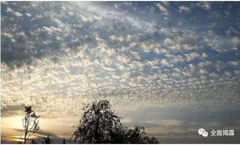
当云层被两组电磁波影响，并受到电磁波的连续重击，云层就会以非常有序的形式断开。当它们移动到被高能电磁波和微波连续重击的地区时，这些云层形成了内部彩虹；当它们飘出高能电磁波和微波范围时，彩虹也会随即消失

HAARP发射的高频电磁波会推动电离层大气内的电流沿水平方向移动，从而产生电喷流，即极光。极光的辐射，不仅会引起电场的变化，而且也会引起地磁场的变化。

HAARP在电离层的极光之中制造的人造极光－在自然极光的内部，一个个绿色的人造光斑。
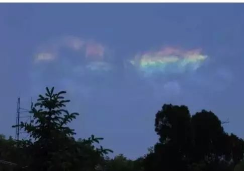
汶川地震前2小时，距离震中以北400公里的甘肃省天水市拍到的极光
5）他们是怎样对汶川实施人工地震的：来自阿拉斯加HAARP队阵的9千瓦脉冲长波无线电波，结合来自在轨道上的美国军事卫星发出的微波，导致了中国土地的共振

As the land began resonating, its own movement tore itself apart, causing the massive earthquake
当大地开始共振，它自身原有的运动将它撕裂，造成了大规模地震
Photos from Tianshui city, Gansu province, China -- the city near the epicenter of the quake -- show strange cloud patterns a full two days BEFORE the quake hit. The cloud formations can be seen breaking apart in patterns indicating they were being hit systematically with something from above.
来自中国甘肃省天水市——震中附近城市的照片显示，地震袭来足足两天前的奇怪云型。可以看到云的形态是成模式断开，表明它们是系统地被来自上方的什么所击中。
The clouds were being affected by the two sets of radio waves. As the waves pounded down from the sky, the clouds broke apart in very orderly fashion; proving that something from above (other than wind) was affecting this specific area of China.
云层是被两组无线电波所影响。当电波从天空连续重击，云层以非常有序的形式断开，证实来自上方的什么（不是风）正在影响中国的这一特定地区。
Some clouds, shown below, even contained their own Rainbow!
一些云层，如下所示，甚至带有它们自己的彩虹！
So that you can feel comfortable that none of these photos have been tampered with for effect, below is video showing the rainbow clouds as they developed over the area. You can see the clouds moving. As they move into the area being pounded by high-powered radio and micro waves, the clouds develop the internal rainbow. As they drift out of the high-powered radio and microwaves, the rainbows disappear. This ought to provide some level of corroboration of the still images and make clear to everyone that something was coming down from above, which caused this.
你可以确信这些照片当中没有任何一张为了效果而被处理过，下面是显示彩虹云在地区上空形成中的视频。你能够看见这些云运动着。当它们移动到被高能无线电波和微波连续重击的地区时，这些云层形成了内部彩虹。当它们飘出高能无线电波和微波范围时，彩虹消失了。这应该提供了静止的图像的某种确证，让每个人都清楚来自上空的什么东西，导致了这一现象。
The 'long wave' attack originated from the HAARP array in Alaska. These extremely long radio waves were pulsed slowly and traveled deep underground when they hit. The much smaller, pulsed microwaves from a US military satellite, pulsed at a faster rate and, because the wavelength is so much smaller, they did not penetrate deeply into the ground.
“长波”攻击来源于阿拉斯加的HAARP阵列。这些极长无线电波被缓慢地发出并在它们袭击时深深地在地下穿越。来自美国军事卫星的小得多的脉冲微波，以更快的频率被发出，并且因为波长小得如此多，它们没有很深地渗入地下。
Long, slower, waves hitting deep;
长、较短的波袭击深处；
Shorter, faster waves hitting shallow.
较短、较快的波袭击浅处。
The deep rock began to resonate at one frequency (tempo) and the surface rock/dirt began to resonate at a different, faster rate.
深处的岩石开始以一种频率（拍子）共振，表层岩石/地面开始以另一种更快的频率共振。
The two separate rates of resonation caused literally BILLIONS of tons of dirt and rock to begin subtly, gently, almost imperceptibly slapping against each other within the ground!
两个错开的频率导致了实际上几十亿吨的泥土和岩石开始微弱地、轻轻地，几乎感知不到地在地面下彼此撞击。
With all that weight hitting itself it wouldnt - and didnt - take long for a key geological lock to be crushed, allowing a sudden movement of a large land area underground, which was felt as a massive earthquak at the surface.
在所有的内部撞击力的作用下，很快一个关键的地理闭锁会崩溃，使得地下的大片地区发生突然的运动，这在地表被觉知为一场大规模的地震。
Lest you think that radio waves 'cant cause anything to move' consider your microwave oven. Using as little as 500 watts, microwaves traveling through food 'excite' the molecules within the food. The molecules start rubbing together. The friction of the molecules bouncing off each other causes heat. The heat cooks the food. 为免得你想无线电波“不能导致任何事物运动”考虑你的微波炉。
使用少到500瓦，微波在食物周身经过，使食物内部的分子活跃起来。这些分子开始互相摩擦。分子的摩擦力彼此撞击产生热。热烹饪了食物。
Now, take that same proven technique and multiply it to ninety million watts, pounding down on a particular area for at least two full days. Do you see how that amount of energy, pounding down relentlessly for at least two days, might cause the molecules inside some rocks to start moving? As the first rock molecules start to 'excite' they bounce into other molecules causing not only some heat but in this case tiny vibration. As the vibrations spread to other rocks underground, they too start to vibrate.
现在，同样是那个已经被证明了的技术，将它叠加到9千万瓦，连续地重击一个特定地区为时至少2天。你了解到那个不间断连续重击下来至少2天的能量怎样有可能导致一些岩石内部的分子开始运动吗？随着第一个岩石分子开始活跃，它们撞击其他的分子不仅产生一些热量，而且这次是小的震动。当震动扩散到其他地下岩石，它们也开始震动。
Whats that you say? You STILL dont believe that radio waves could affect earth and rock in a way to cause any kind of vibration? OK, I will offer you a final real-life example: Avalanches. 你说什么？
你还不相信无线电波能够以一种方式作用于地球和岩石而导致任何震动？好吧，我会提供给你最后一个真实的例子：雪崩。
As most of us know, something as small as a sneeze can cause an avalanche. To prevent avalanches, Park Rangers and Ski Slope managers do what? They detonate a single stick of dynamite to cause a 'shockwave that spreads' causing a chain reaction that causes hunddreds of millions of pounds of rocks, earth or on ski slopes, snow to . . . . move.
像我们中绝大多数人所知道的那样，一些像蛇一样小的东西能够导致一场雪崩。为了防止雪崩，公园看守者们和滑雪场经理们做什么？他们引爆单独一条炸药以引发一轮“扩散的冲击波”从而引起一串连锁反应以使几千万磅的岩石、泥土或者在滑雪坡上的雪，移动。
Back to the China earthquake, when several hundred billion tons of earth and rock start to vibrate, even impercetibly to humans, the enormous weight of that small vibration packs a gargantuan wallop. All it takes is for that wallop to act upon a weak point, crushing it, which then allows a tectonic plate to move. . . . maybe an inch. When billions of tons of rock and earth suddenly moves one inch,the resulting shockwave is felt as a HUGE earthquake.
回到中国地震，当几千亿吨的泥土和岩石开始震动，即使为人们所觉察不到，那种小的震动所形成的巨大力量汇聚起一个庞大的冲击力。它所要做的全部就是让这一冲击力作用于一个薄弱点，挤垮它，然后使得一个构造板块移动......可能是一英寸。当数十亿吨岩石和泥土突然移动一英寸，所产生的冲击波被感知为一场巨大地震。
Humans, surrounded by a buffer of air and subjected to local noise from traffic, airplanes and everything else we hear in a typical day, could not hear or feel the subtle slapping underground. Frogs, however, could feel it and hear it.
人类，被空气消音系统所包围并且为本地的交通、飞机和其它每一样我们在通常的一天当中所听到的噪音所干扰，听或感觉不到地下细微的拍击声。然而，青蛙，能够感觉到它和听到它。
As their watery environment filtered out all surface noises and as the water itself carried the vibrations from underground, the minute slapping caused by the radio waves probably sounded like a gigantic bass drum beating all around them. Scared, disoriented or just driven nuts by this terrible sound (to them), tens of thousands of frogs came out of the waters around the city!
当潮湿的环境吸收掉了所有表面的噪音，当水本身带走了来自地下的震动，无线电波造成的微小的拍击或许听起来像是一个巨大的低音鼓敲击着周围的一切。惊恐的、迷失方向的或因为这一可怕的声音（它们所能听到的）而吓傻的，数万只青蛙离开了城市周围的水域！
Initially, average people and even meteorologists in China, thought this was a natural phenomina -- until the earthquake struck the exact same area. Then the folks there started putting two and two together: China was attacked!
起初，一般人甚至是中国的气象学家们，都认为这是一种自然现象，直到地震袭击了恰恰同一地区。那时那里的青蛙们开始了两两挤在一起。中国被袭击了
This attack was deliberate and it was done to teach China a lesson: OBEY the 'New World Order' or China can be destroyed with a weapon that cannot be defended against and which leaves no forensic evidence to PROVE the quake was deliberate.
这一袭击是蓄意的，它被发动来给中国一个教训：遵守“新世界秩序”否则中国会被以一种不能被抵御的不留下能够证实地震是故意制造的法庭证据的武器而毁掉。
Understandably, the Chinese government is furious. They and their people have paid a huge and terrible price so that some New World Order douchebag could 'send them a message.'
可以理解地，中国政府是暴怒的。他们和他们的人民付出了巨大的和可怕的代价，如此一些“新世界秩序”的恶棍能够“给他们点颜色看看”。
As of May 28, 18 days after the massive earthquake, the 'price' the Chinese people have paid (so far) is: 68,516 dead 365,399 injured 19,350 missing
截止5月18日，巨大地震之后18天，中国人民付出的“代价”是： 68,516人死亡 365,399人受伤 19,350人失踪
While the human cost was steep, the financial impact of this attack will surely total in the hundreds of billions, perhaps even trillions of dollars.
在人员伤亡惨重的同时，这一袭击所造成的经济损失必将以千亿计，甚至可能是数万亿美元。 HAARP气象武器将使地球面临毁灭危险
四.WWW3第三次世界大战美军攻击带
https://tieba.baidu.com/p/4243917695?pn=70


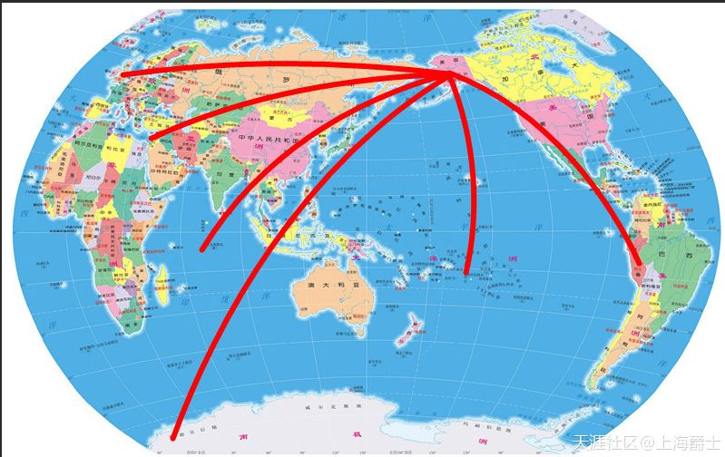


地球物理武器介绍
地球物理武器是人类战争手段自核武器之后又一革命，自其产生至现在未超过五十年，其技术在实践中正臻于成熟，而大多数人对其仍缺乏了解，似乎超越了想象，正如核武器发明之前人们无法想象其威力一样。实际上很多人已亲身经历过，只不过对此一无所知。地球物理武器在威力和隐蔽性上都远远超越了核武器，它的成熟和负诸实战标志着人类战争进入了核武之后的新时代。正如核武器在发明之初那样，少数掌握这种武器的国家具有了战略优势，并可发动一场不对称战争。
所谓地球物理武器，就是指通过改变地球物理环境的自然特性，引发灾害，对人类施加致性影响的一种武器。主要分为天气气候武器、无线电技术武器和构造武器。
天气气候武器：主要作用于近地大气层、臭氧层。向近地大气层中排放各种化学活性成份和悬浮微粒；利用超高频电磁辐射和热流作用就会引起降水猛增，导致洪水泛滥；加速积雪和冰川融化；降水减少，导致干旱；在不同纬度出现破坏性飓风；大气透明度改变，并导致局部或在区天气异常。向臭氧层排放各种化学和更高级物质；在臭氧层形成对太阳辐射的人为影响；使用紫外线和超高频辐射就会出现新的臭氧空洞，现有的臭氧洞扩大，地球遭受强紫外线辐射的强度相应增大；臭氧浓度上升；大气辐射平衡异常。
无线电技术武器：主要作用于电离层、磁层和地球周围宇宙空间。在电离层注入各种化学物质（弥漫性气体）；射入电子、离子；使用大功率甚至低频、短波、超高频辐射，乃至紫外辐射源；爆炸化学炸药就会在离子和中子成分上造成环境改变，并随后对各种无线电和光学设备形成重大影响；在电离层各层引发带电粒子溢出；地球地磁场和电场发生局部和其它规模的变异；人为闪电出现等。在磁层和地球周围宇宙空间射入电子和等离子；使用强大的甚低频率辐射；抛洒微细弥散物质；爆炸化学炸药就会导致地球磁场发生变化；
各近地大气层电场变化；出现人为地球辐射带或地球自然辐射带参数变化；“太空垃圾”可能增多。
构造武器：主要作用于岩石圈（包括地壳和地层）和水圈（海洋）。在岩石圈中，地下和水下核爆炸或化学炸药爆炸；就会引发地震、使土壤的化学成分和物质结构发生变化（包括产生放射性和化学污染）等灾害，还可能强化火山喷发并产生“海啸”效应。而在水圈中，向近地大气层排放各种化学活性物质或可能影响太阳辐射的尘埃，建立能够导致某些大气现象形成的局部温室效应，就会使浮游生物和其它生物类型遭到毁灭，台风、飓风和风暴频发，产生海啸和巨浪，天气变化或导致短期气候异常。
通过多种诱发手段作用的结果，最终的表现便是暴雨、干旱、冻灾、飓风、海啸、地震和火山爆发等地理气象灾难，与自然灾害不同的是，地球物理武器能通过人工手段对灾害发生的时间和空间进行精确控制。由于其最终表现为自然灾害，这使其几乎无法被甄别出来，可以说是超级暗器。
地球物理武器是在核武器和电磁学基础上发展而来，早在20世纪60年代美国的气象武器便已投入实战。
http://news.xinhuanet.com/mil/2007-04/23/content_6014988.htm
苏联自60年代通过地下核爆研究地震武器。到80年代的“水星计划”时便已研究出可用于实战的地震武器。
http://news.xinhuanet.com/world/2007-03/18/content_5861561.htm
解放军报的文章则闪烁其词的暗示了墨西哥湾的飓风和印尼海啸的成因。
http://news.tq121.com.cn/index.php?id=17830
国内也有很多专业期刊发表了对地球物理武器的研究文章。
地球物理武器虽然隐蔽，毕竟无法无所遁形，可以通过间接因素进行推测。尤其是其发生时间和地点的特殊性暴露其极强的目的性，这种主观性正是与自然灾害最大的差别所在。
例如在大规模渡海作战时突发海啸使攻击部队遭到灭顶之灾，这种具有精确的时间空间特性的自然灾害便极有可能是地球物理武器所为。在古代偶然发生的自然环境灾难造成的历史转折屡见不鲜，一般被当作天意或臆想为法术，如术士的呼风唤雨等。然而在人类已经掌握相关技术的今天，在发生这样的事则完全可能是人为造成。极强的目的性和罕见性是其与自然灾害相区别的最大特征。
08年的很多灾害就表现出这些特征。一月中旬南方大范围出现五十年一遇的雪灾和冻雨，在时间和空间上都体现出极高的精准性。时间正在春节前夕的春运高峰，中国交通正处于极度饱和状态，而南方又普遍缺乏取暖防冻设施，很多地方甚至从未下过雪。冻灾的结果不但对社会造成极大混乱，扰乱了中国最重要的节日，对开春的粮食生产也产生了极大影响。五月初缅甸的风暴袭击了世界最大的稻米出口国的主要产粮区，造成了极大破坏，可能造成了几十万人死亡。这些自然灾害不但极大破坏了粮食生产，也大量消耗了战略储备，这也为操纵全球粮食期货市场的集团继续抬高粮价提供了绝佳的配合，从而进一步加剧自去年起的全球范围内粮食短缺和物价上涨。在农业生产能力极高的今天，出现全球范围的粮食短缺几乎是不可能的事情，除非经过长期周密的安排部署才能达成。它不但激化了社会矛盾，也严重制约了军事动员能力。
这两场灾害有很多相似的地方，都是由发源于东印度洋的暖湿气团引起，具有突发性和不可预见性，这在卫星监测已很发达的今天几乎是不可想象的。再有便是其罕见性，中国南方的雪灾是五十年一遇，缅甸的风暴则是五百年一遇，正因为其自然发生概率极小所以才会造成巨大损失。实际上五百年一遇也就意味着几乎不可能自然发生。而这些特点很多也与04年印尼海啸相同。
紧接着四川的大地震则更加表现出强烈的时空目的性。5月12日正是距88奥运前88天，震中在绵阳北的汶川、北川一带。而绵阳正是中国国防工业的核心区，不但是中国的核武器研究基地所在地，也拥有亚洲最大、世界第三大的风洞群，自然也是中国航空航天研究的中心。小到导弹、大到登月飞船都要在这里进行研究测试，触及了西方战略利益的、刚刚挂牌的大飞机项目以及登月项目自然也需要这里的技术支持。在绵阳西北一带的群山中到处是中国在60年代三线建设以来建成的秘密研究中心和战略储备库，这里集中了中国最尖端的技术和最优秀的人才，是中国赖以存在的战略核心区，中国的命脉所在。这也是为什么精锐部队在地震发生的第一时间便不顾代价进入震区，随即国家又启动了防核扩散和水污染措施。12日美联社在《武器专家称中国正在大规模增强核武库》的报道中，援引斯德哥尔摩国际和平研究所主任Bates Gill的话说，中国近来升级了其核武库，使其核武器的打击精度和机动性能得到提升，此外，导弹燃料从液体改为固体，作战反应时间也大为缩短，恐将给未来的军控带来问题。而当天绵阳就遭到了毁灭性地震打击，这还真是场及时雨，消除了他们忧虑。
现在很难了解国家的核心利益受到了多大损失，如果在常规战状态这里遭到了打击的话，早已标志着全面战争的爆发，现在看起来却似乎只是一场意外，而且是相当于万枚原子弹打击力度的意外。更意外的是随之降临的暴雨使灾难雪上加霜，使救援几乎无法进行。这场意外不但打击了中国的核心利益，也考察了中国的动员和军队投放能力，并进而暴露一些机密机构的具体位置所在。实际上地震发生不久，就有些外国游客在该地区失踪了，尚未进入的也在网特的舆论掩护下拼命打着医疗救护的名义往里挤。
而国家的救援行动也极为惊人，山地空降，单日空运万人入川，甚至不惜动用空降十五军精锐部队，72个小时内投送10万兵力并且还在继续增兵，可以说是世界上最大规模和最为迅速的救援行动，完全达到核战争规模的国家救援级别。与其说是在展示强大的军事能力，不如说是在进行大规模战争前的热身。
而此前两天，时代杂志吹响了入侵缅甸的号角，http://www.time.com/time/world/article/0,8599,1739053,00.html，便是以人道救援的旗号发动战争。这些接踵而来的灾难确实在天时和地利上提供了极佳的时机。缅甸一旦失守，中国柔软的腹部便暴露无遗，从此中国不再有后方，“三线”也失去意义。这也是遏制中国环形防御的最后一环，也是最具威胁的一环。缅甸能否成为第二个仁川，这取决于双方的胆识和魄力。
所谓明枪易躲、暗箭难防，一旦遭受了自然灾害武器的攻击，几乎无法进行反击，尤其是当我们尚未掌握这种技术时，更是毫无还手之力。这是一种新形式的不对称战争，也是暗战的最高形式。在缺乏防御能力的情况下，进攻则是最好的防御，只有主动出击才能转变被动挨打的局面。
2008年1月9日开始——中国华中、华南的湖南、江苏、江西、湖北等省级行政区开始遭遇持续大规模雪灾，造成重大损失。
2008年1月31日——据中国民政部透露，自1月10日至31日的雪灾已使湖南、湖北、贵州等19个省级行政区受灾，60人死亡，2人失踪，175.9万人紧急转移，直接经济损失537.9亿元人民币。
2008年5月12日——中国四川省汶川县发生里氏8.0级特大地震，全国除吉林省，黑龙江省，新疆维吾尔自治区外均有震感，大地震已确认造成69227人遇难，374643人受伤，17923人失踪。
在震中有很多人象蹦床一样被摔死，这是典型的深层的地下核爆炸的核爆炸地震波，绝对没有错。美国通过间谍卫星和人肉间谍对中国西部部署的二次核打击基地情况摸得一清二楚，这次地震是美国对中国的一次外科手术式的核打击。5月12日12时美国超级绝密隐型轰炸机在关岛完成对中国的核打击准备后，于中午13时起飞，爬升到25000米高空然后入侵中国领空，于14时15分到达预定的打击目标震中一带上空投下相当于日本广岛原子弹250倍当量的、带有高能钻地炸弹的核弹，深入地下1000米至2000米左右产生核爆，目的是彻底摧毁中国建在当地地下的二次打击核设施，从而造成震中附近地面象蹦床一样的弹跳，即在空上都很多人被抛起摔下被摔死。有人要问：美国为什么在日间打击？不在夜色掩护下打击不是更安全吗？问得好！这方法正是美国从中国学去的--在中国与越南的老山（或法卡山）的阵地争夺战中，中国一直采取夜间攻击，牺牲了一团人员都没有办法攻下，后来一连级参谋带十来个人在大白天摸上去一下子把这个阵地拿下来了，自己损失极少。美国就这样利用其高科技隐型技术、反心理战术和中国在奥运圣火传递时的松懈思想，以及白天中国雷达观测的松懈麻痹思想，极其成功地对中国进行一次外科手术式的核打击，使中国遭到了极大的损失，估计中国的核设施也会受到打击，至损程度如何就不得而知了。美国在中国地震时仅捐50万美元，在国救灾期间，只关心中国的核设施受损如何，只对中国军队救灾时的战术力量进行战略评估，并不关心中国的灾情和损失。由此，可以更加证实中国的此次地震是美国对中国的次核攻击。美国为什么攻击中国呢？这次对中国的核打击是美国全遏中国崛起中的一环，既摧毁中国的二次核设施，又打击中国经济，更极大干扰奥运会的准备工作，同时想通过抗震救灾不作为来打击中国政府的形象，达到搞垮中国共产党的目的（此条失败）。真是一石几鸟。再联系到：对中国开展全面的金融掠夺；第一、二、三岛链的海上包围；阿富汗驻兵；西亚布置反导系统......对中国进行海陆空全面封锁......所有这一切都证明了美国帝国主义摧毁中国的计划正在按步就班地实施。